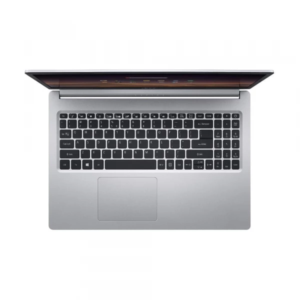
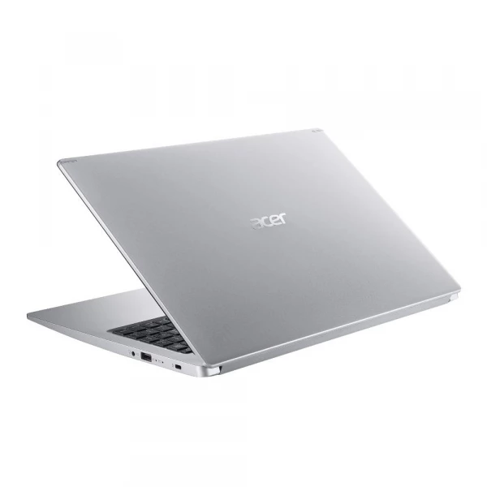

NOTEBOOK ACER ASPIRE A515 I5 10º 4GB 256SSD 15.6" FULL HD
R$ 4.482,00
COMPRAR
Especificações:
- Sistema Operacional: Linux Endless-1SP
CPU:
- Intel Core i5 10210U Quad Core (8 Threads)
- Frequência: 1.60 GHz até 4.20 GHz
- 6 MB Intel Smart Cache
Memória
- 4GB RAM DDR4 (4 GB Soldada + Slot Livre) DDR4-2133Mhz
- Expansível até 20 GB
Tela:
- 15.6 LED LCD com design ultrafino
- Painel: TN
- Resolução: Full HD (1920x1080)
- Proporção 16:9
- Taxa de Atualização: 60 Hz
- Tempo de resposta: 8 ~ 11ms
- Brilho: 220 nits
- Taxa de contraste: 400:1
- Color gamut (NTSC): 45%
- Tecnologia Anti reflexo Acer ComfyView
- Gráfico Intel UHD Graphics G1 com memória compartilhada com a memória RAM.
Armazenamento:
- 256GB SDD PCIe 3.0 x4 NVMe (M.2 2280)
- Upgrade Este modelo possuí capacidade para a instalação e/ou melhorias de SSD e HDD: Slot ocupado M.2 2280, compatível com unidades SSD PCIe 3.0 NVMe x2/x4 de até 512GB (Não acompanha o produto).
- Slot livre SATA 3, compatível com HDD ou SSD SATA 3 2.5 de até 2TB (Não acompanha o produto)
Alimentação e bateria:
- Fonte de alimentação: Adaptador AC Bivolt de 3 pinos (45W) com cabo certificação INMETRO
- Bateria: Bateria de 4 células (Li-Íon) 48Wh
- Autonomia da bateria de até 8 horas10 (depende das condições de uso)
Teclado e Touchpad:
- Teclado: Teclado numerico Independente
- Teclado Retro Iluminado com luz branca
- Tipo membrana em português do Brasil padrão ABNT 2
- Atalho com função multimídia (Play/pause, parar, voltar, avançar, aumentar volume e diminuir volume)
- Touchpad: Multi-gestual com dois botões
Este produto não possuí leitor de CD/DVD A CPU e GPU são soldadas na máquina
Conteúdo da embalagem:
- Notebook Acer Aspire 5
- Kit para instalação de HDD
- Fonte carregadora do notebook
- Manual em português
- Termo de garantia